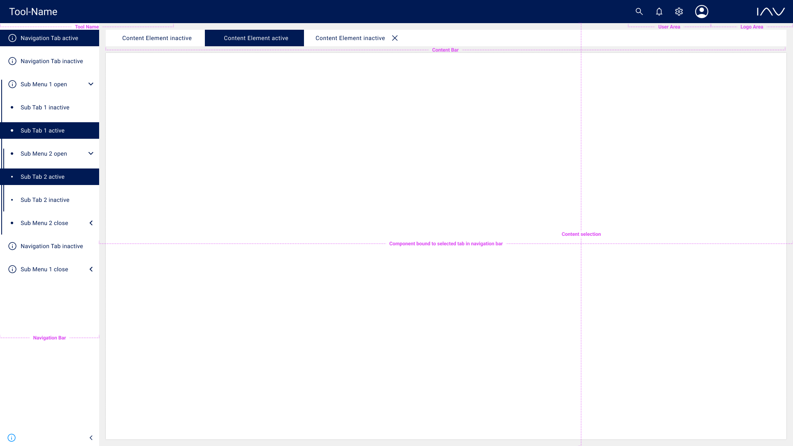
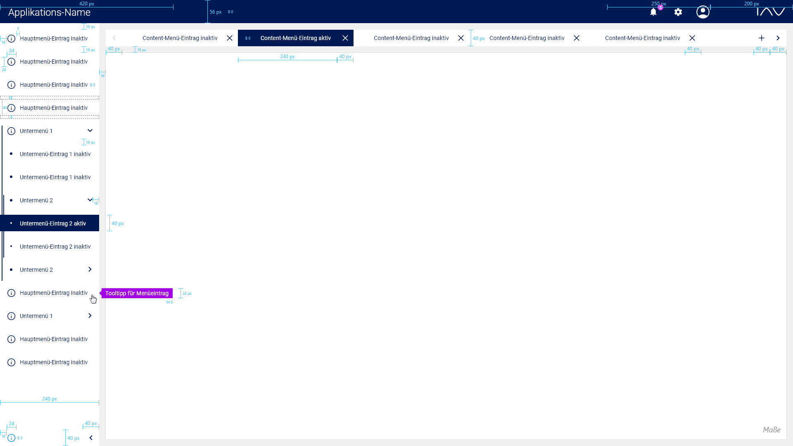
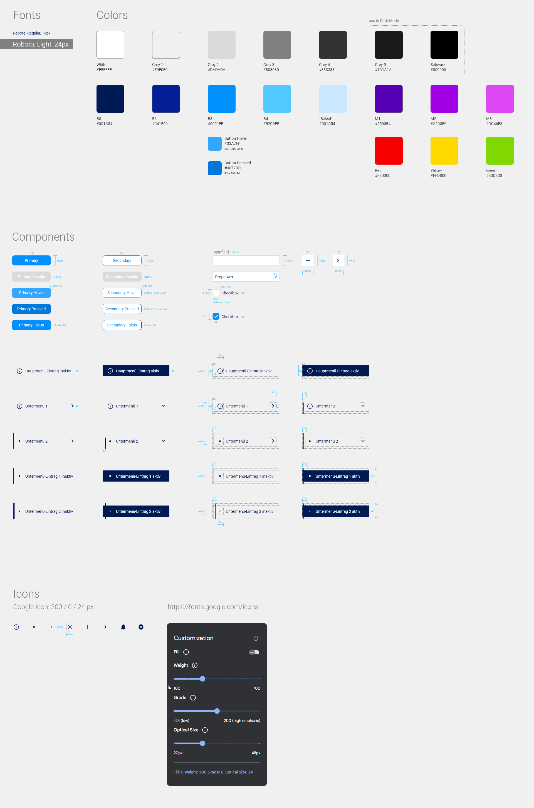

Important Information
Disclaimer
The Framework simplifies the development of user interfaces in the IAV environment. It does not substitute the basic knowledge of the large field of frontend development.
Compatibility
Please ensure that you have at least installed Node version 16 and npm version 8.
Subscribe to New Updates
Every time a new version is released, a GitLab release will be created. To receive an email notification for a new release, subscribe to the GitLab repository:
- Go to Project overview.
- Click the drop-down icon next to the notification bell.
- Select Custom.
- Close the drop-down menu.
- Click the bell.
- Tick "New release" and hit the OK button.
TypeScript
The framework supports JavaScript and TypeScript. It is recommended to use TypeScript for type safety, which will greatly enhance your developer experience and development speed, especially for larger projects. One significant advantage of using TypeScript is the automatic checks for the definition of all mandatory properties of components.
Imports
The framework uses ES6 import/export syntax. There are only named exports. The following snippet shows an example of an import using the framework:
import { UILayer } from "@npm-iav-frontend/iav-frontend-framework/uiLayer";Support for class and function based components
The framework can be used with React functional components as well as with React class components.
Cookies
The framework adds a banner for accepting the use of cookies out of the box. The banner is needed in web applications in order to be consistent with legal regulations. If the user accepts the use of cookies, the banner won't be rendered again.
Layout of an application using the IAV frontend framework
The following image explains the terminology used in this documentation.
Dimensions and appearance
The following image shows the dimensions of the elements inside the authentication view.

The following image shows the dimensions of the elements inside the main view.
The following images show the appearance of the framework when the dark mode is activated.


Official IAV-Colors
The following image shows the standardized color spectrum of IAV.

Styleguide
The following image shows the style guide which is based on the IAV corporate design colors and the extension of Christian Becke.
